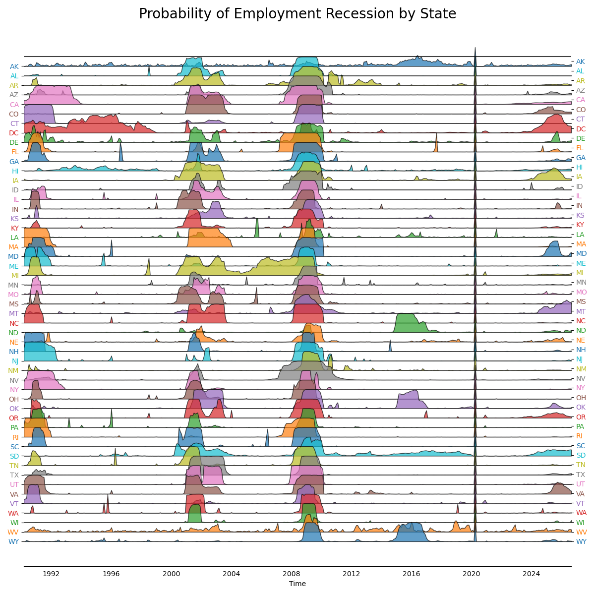

Colored by current recession probability. Shift-click a second state to compare.
The recession probability is the model's estimate that a state's payroll employment growth in a given month came from its low-growth ("recession") regime, from a Bayesian two-regime Markov-switching model fit separately to each state's monthly employment growth. In the single-state view, orange shading marks months with a probability of 50% or more; gray bands are NBER national recessions. It is a coincident nowcast of the labor market, not a forecast, and the most recent months can be revised as new data arrive.
